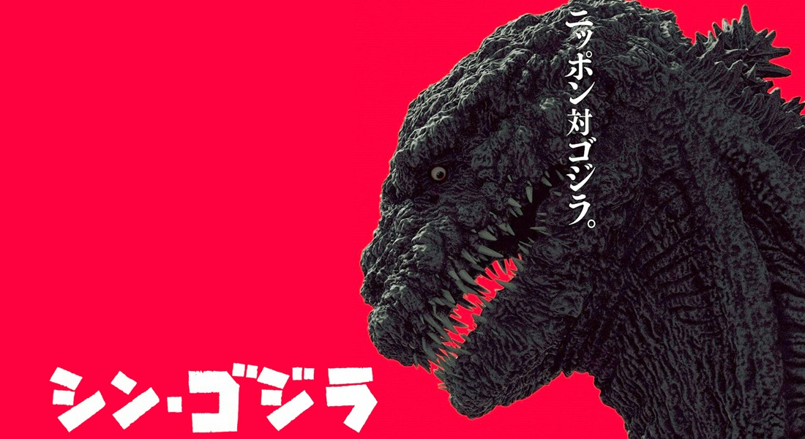
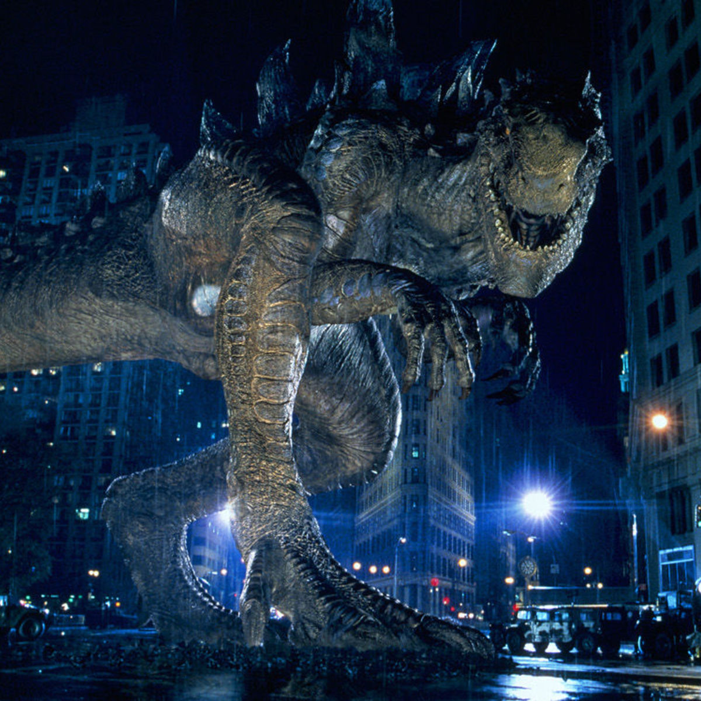
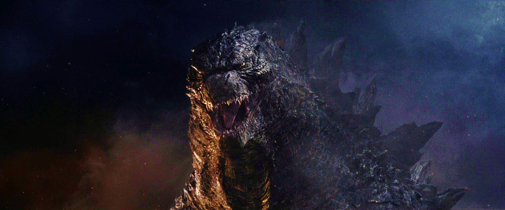

Historia
El impacto del primer film de 1954 deriva de que, en vez de ser una simple aventura, el director Ishiro Honda lo presentó como una suerte de metáfora sobre el ataque nuclear que el pueblo japonés había padecido en 1945, al final de la Segunda Guerra Mundial. Con el correr del tiempo, el personaje perdería su imagen de icono de la masacre atómica del año 45, y atravesaría varias etapas, pasando a ser desde un espectáculo de medianos efectos especiales o un show infantil, a una especie de cómic filmado. A finales de la etapa Showa, la serie ya incluía elementos típicos del manga japonés, mezclando a Godzilla con civilizaciones fantásticas, invasiones alienígenas y, sobre todo, adversarios gigantescos y monstruosos. Curiosamente, en muchas de las aventuras de Godzilla, el monstruo es el héroe de la película, al defender a Japón de los enemigos que lo quieren destruir y pocas veces se ve como un enemigo para toda la humanidad y vida en la tierra. Gojira, al llegar a los cines en Estados Unidos, fue renombrado "Godzilla, King of Monsters" y se eliminaron escenas para cambiar la trama a la de un reportero que narraba lo sucedido y para evitar dar mala imagen con respecto al uso de las armas nucleares. Lo mismo se hizo en la película de Godzilla de 1985. En 1998, se produjo la versión estadounidense, criticada por los fanáticos acérrimos por creer que desvirtúa totalmente al personaje. Hay algunos detalles que remiten a la versión 1954, pero se diferencia notablemente en el argumento. La imagen del monstruo es distinta, y la trama se centra en los individuos más que en Zilla (nombre original de este).
Origen
Godzilla en Tōhō
Godzilla tiene un origen no muy claro, aunque vinculado con los efectos de la radiación, siendo un Godzillasaurus (especie ficticia) que sobrevivía aislado en una pequeña isla llamada la isla de Odo, donde era considerado un ser sobrenatural, que era temido y adorado, hasta que fue alterado por pruebas atómicas cercanas a la isla, así como por las bombas de Hiroshima y Nagasaki. Luego, en Godzilla vs. King Ghidorah, por medio de viajes en el tiempo Godzilla es movido de su lugar por gente del futuro, para evitar que mute y enviado a otra isla donde un submarino atómico lo irradia sufriendo la catastrófica consecuencia de hacerlo crecer casi el doble de su tamaño. Para la película GMK Godzilla, Mothra, King Ghidorah: Daikaijū Sōkōgeki se sugirió la teoría de que Godzilla es la fusión de las almas en pena de las víctimas de la Segunda Guerra Mundial. Aunque la creencia popular es que el rugido de Godzilla fue tomado del chirrido que hacía la puerta de entrada a los estudios Toho, el rugido de Godzilla fue creado por Akira Ifukube al frotar un guante de cuero con las cuerdas de un Contrabajo
Godzilla 1998

Según la adaptación norteamericana de 1998, durante las pruebas atómicas
llevadas a cabo en la Polinesia Francesa la radiación alcanzó una colonia
de iguanas y un huevo irradiado sobrevivió desde donde nacería el kaiju,
pasando su primera etapa de vida en el mar hasta lograr su tamaño adulto
y emigrar posteriormente hasta Nueva York guiada por sus instintos en busca
de un lugar donde anidar y desovar.
MonsterVerse
Según la adaptación estadounidense de 2014, Godzilla no sería un kaiju mutante, sino uno de las tantas criaturas sobrevivientes de un antiguo período de este planeta cuando la radiación de la superficie era diez veces más intensa que en el presente. En esa era Godzilla fue la forma de vida suprema en la punta de la cadena alimenticia; sin embargo cuando los niveles de radiación del planeta descendieron todas las especies murieron excepto algunos ejemplares que entraron en hibernación o descendieron cerca del centro de la Tierra, ya sea excavando o nadando en las fosas abisales, y durmieron allí esperando una era más rica en radiación. A lo largo de la historia del hombre Godzilla despertó en algunas ocasiones, la última de estas fue a mediados del siglo XX y al ser detectado por los humanos en la zona del Pacífico intentaron exterminarlo por medio de ataques nucleares, sin embargo fueron incapaces de hacerle el más mínimo daño. Después que regresó a dormir, el incidente fue encubierto y se explicó que este era un campo de pruebas, siendo esta la verdad tras las pruebas atómicas en el Pacífico. Lo cierto es que Godzilla despierta en cada ocasión que otro kaiju aparece en la superficie, lo enfrenta y destruye, para después volver a su letargo. Según teorizara el Profesor Ishiro Serizawa, este kaiju es una suerte de protector de la naturaleza, despertando cada vez que hay alguna amenaza y teniendo como misión destruirlas para evitar que alteren el equilibrio de la vida. 